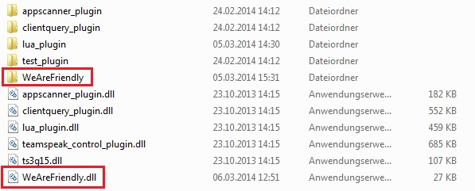

Aktuelle Version 1.0.1
Information über änderungen hier
Download x64 (TeamSpeak 64 Bit) oder x86 (TeamSpeak 32 Bit).
Solltet Ihr euch nicht sicher seit welche TeamSpeak version (32 oder 64) ihr habt dann, öffnet TeamSpeak und startet den Taskmanager, geht dann dort auf Prozesse und sucht ein Prozess mit dem namen ts3client_* sollte dieser mit win64 enden dann habt ihr TeamSpeak 64 Bit installiert, wenn er mit win32 endet dann habt Ihr TeamSpeak 32 Bit.
Jetzt geht ihr in den Ordner wo TeamSpeak installiert ist die Standartpfade sind:
In dem TeamSpeak Ordner findet Ihr ein plugins ordner, Ihn diesen müssen die Datein die in dem Archiv sind die Ihr vorhin runtergeladen habt reinkopieren. Danach sollte das ganze so aussehen:
Jetzt Öffnet Ihr wieder TeamSpeak und geht auf Einstellungen dann auf Plugins, jetzt öffnet sich ein Plugin-Fenster dort seht ihr das We are friendly Plugin, wenn nicht dann einfach unten links auf den Knopf "Alles Aktualisieren" drücken.
Zum Aktivieren des Plugins einfach das Häckchen setzten.
Konnte das Plugin bei euch nicht geladen werden? Dann benötigt ihr das hier http://www.microsoft.com/de-de/download/details.aspx?id=40784